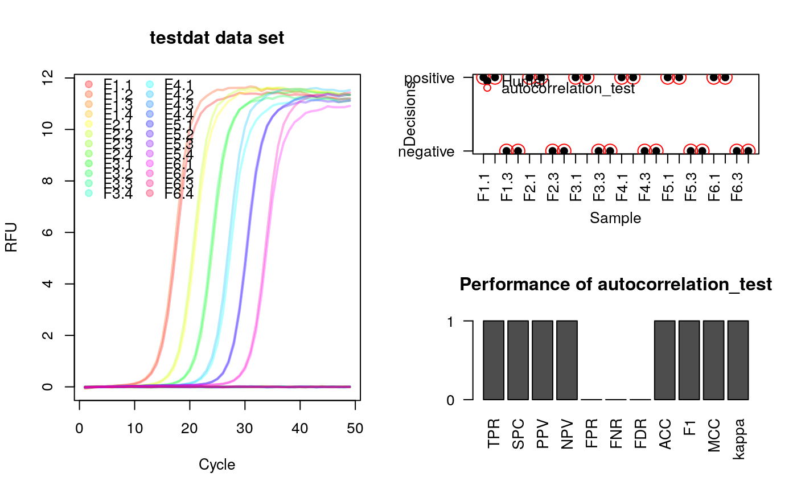

R/autocorrelation_test.R
autocorrelation_test is a function for an autocorrelation analysis
from a quantitative PCR experiment. The result of the function is either
a correlation coefficient in case the result is significant at a given
significance level, or a "n.s." (non-significant) if no correlation could
be determined.
Noise (negative) amplification curves usually do not exhibit any
autocorrelation and will therefore be "n.s.".
autocorrelation_test(y, n = 12, sig.level = 0.01, ns_2_numeric = FALSE)
| y | is the cycle dependent fluorescence amplitude (y-axis). |
|---|---|
| n | is the number of lagged cycles (default 12). |
| sig.level | is the significance level for the correlation test., Default: 0.01 |
| ns_2_numeric, | is a logical parameter. If set TRUE, all "n.s." results will be |
# Test for autocorrelation in amplification curve data # Load the libraries magrittr for pipes and qpcR for the data library(magrittr) library(qpcR) # Test for autocorrelation in the testdat data set res_ac <- sapply(2:ncol(testdat), function(i) { autocorrelation_test(testdat[, i]) } ) # Plot curve data as overview # Define the colors for the amplification curves colors <- rainbow(ncol(testdat)-1, alpha=0.3) # Names of samplesfile:///home/tux/R_malade samples <- colnames(testdat)[-1] layout(matrix(c(1,2,1,3), 2, 2, byrow = TRUE)) matplot(testdat[, 1], testdat[, -1], xlab="Cycle", ylab="RFU", main="testdat data set", type="l", lty=1, col=colors, lwd=2) legend("topleft", samples, pch=19, col=colors, ncol=2, bty="n") # Curves rated by a human after analysis of the overview. 1 = positive, # 0 = negative human_rating <- c(1,1,0,0,1,1,0,0, 1,1,0,0,1,1,0,0, 1,1,0,0,1,1,0,0) # Convert the n.s. (not significant) to 0 and others to 1. # Combine the results of the aromatic autocorrelation_test as variable "ac", # the human rated values as variable "hr" in a new data frame (res_ac_hr). res_ac_hr <- data.frame(ac=ifelse(res_ac=="n.s.", 0, 1), hr=human_rating) %>% as.matrix res_performeR <- performeR(res_ac_hr[, "ac"], res_ac_hr[, "hr"]) # Add ratings by human and autocorrelation_test to the plot par(las=2) plot(1:nrow(res_ac_hr), res_ac_hr[, "hr"], xlab="Sample", ylab="Decisions", xaxt="n", yaxt="n", pch=19) axis(2, at=c(0,1), labels=c("negative", "positive"), las=2) axis(1, at=1:nrow(res_ac_hr), labels=colnames(testdat)[-1], las=2) points(1:nrow(res_ac_hr), res_ac_hr[, "ac"], pch=1, cex=2, col="red") legend("topleft", c("Human", "autocorrelation_test"), pch=c(19,1), bty="n", col=c("black","red")) barplot(as.matrix(res_performeR[, c(1:10,12)]), yaxt="n", ylab="", main="Performance of autocorrelation_test")axis(2, at=c(0,1), labels=c("0", "1"), las=2)